Introduction
Anchor points control how you resize and position content on the canvas. They’re helpful when testing designs at different sizes.
The Anchor panel is located above the Appearance panel inside the Inspector panel.
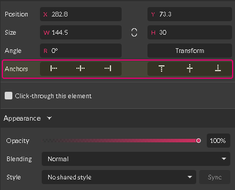
Interface
Six anchor icons are divided into two groups:
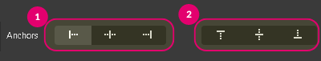
(1) Horizontal anchors are helpful when scaling the width of the canvas.
(2) Vertical anchors are useful when scaling the height of the canvas.
Click an anchor to select it. A unique background indicates the selected anchor.
On Dark Theme:
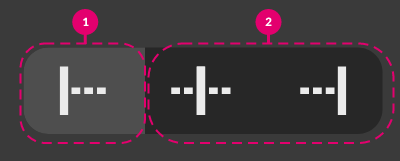
On Light (Default) Theme:
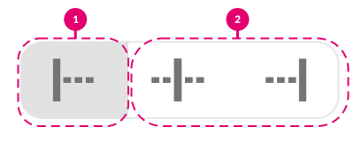
Using anchors
With anchors, you can tell whether an element should snap to a particular position on the canvas (or in a frame or a layer group) or resize when you are resizing the canvas.
Horizontal anchors
You can use horizontal anchors to pin an element to a side or the center of the canvas.
To pin an element to the left, select the left anchor.
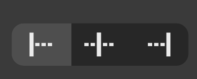
Select the middle option to pin to the center of the canvas.
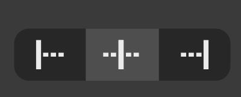
The right anchor pins an element to the right side of the canvas.
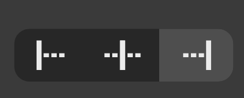
Select both the right and the left anchors to stretch or shrink an element horizontally.
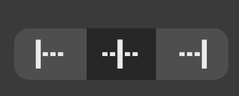
Horizontal anchors in action
In this example, anchors are used in the creation of a list of options and controls.
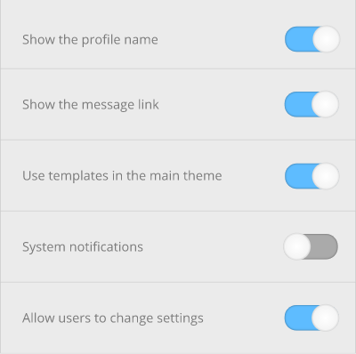
You want to present your design at three different sizes: 450px, 800px, 1200px. You can do it quickly by using anchors.
- Pin the options (textual elements) to the left (1).
- Pin the controls (sliders) to the right (2)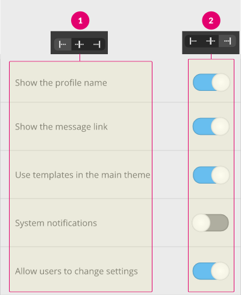
- Select all the panels (backgrounds) and pin them to both left and right to stretch them.
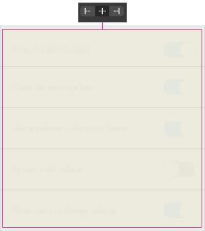 - Click on a blank area of the document to open the Page panel. Type a new canvas size in the Width text field(1), then click .
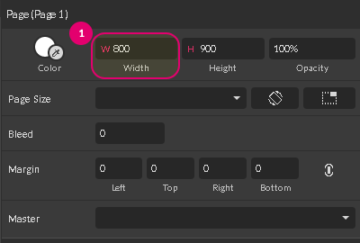
Notice how the elements respond to resizing.
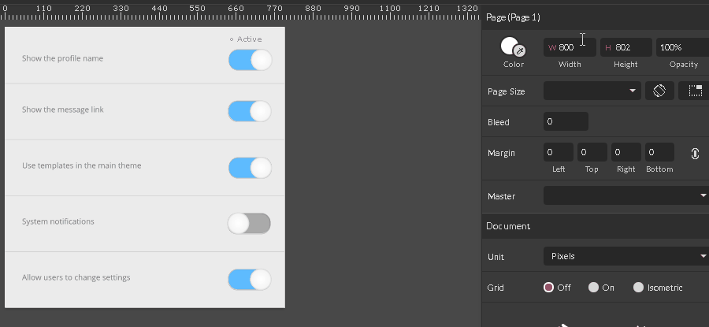
Vertical Anchors
You can use vertical anchors to pin an element to the top, bottom or vertical center of the canvas.
To pin an element to the top, select the left-most anchor option.
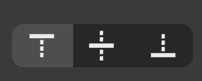
Select the middle option to pin to the vertical center of the canvas.
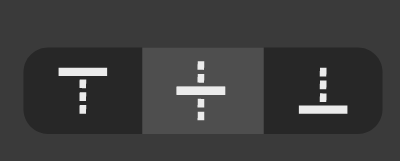
The right option pins an element to the bottom of the canvas.
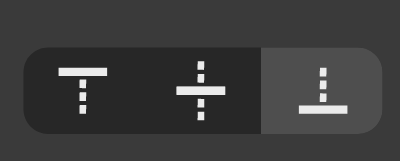
Select both the right and the left anchors to stretch or shrink an element vertically.

Vertical Anchors in Action
In this example, vertical anchors are used in the creation of a typical website, comprised of several pages:
- Homepage (Landing page)
- About
- Contact
- Maintenance/404 page
All have the same header and footer but different content, so the height of the main area may vary.
You can design several pages with the same footer and header position, but have different height for the content area.
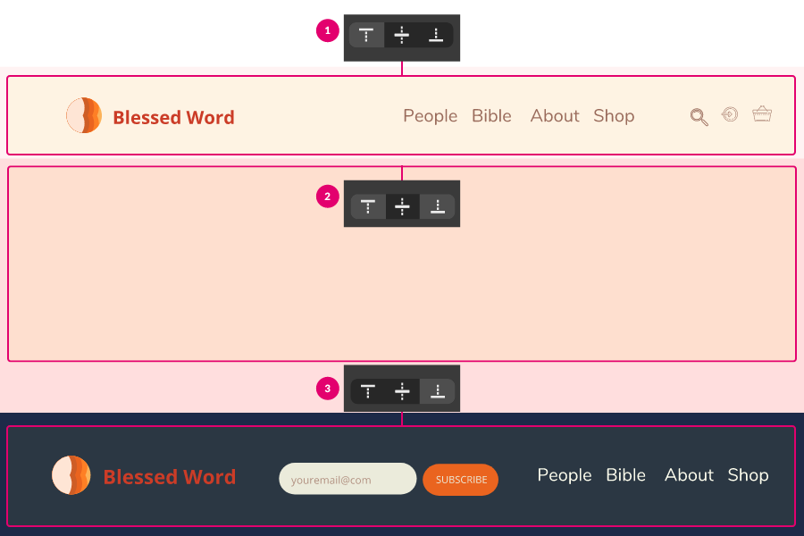
- Pin the header to the top by clicking the left anchor (1)
- Pin the footer to the bottom by clicking the right anchor (3)
- Stretch the content area by selecting both right and left anchors (2) in a vertical group.
- Click a blank area of the document to open the Page panel. Type a new canvas height in the Height field and click .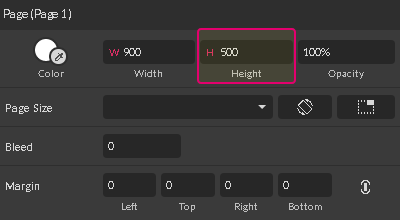
Notice how the elements respond to the different page heights.
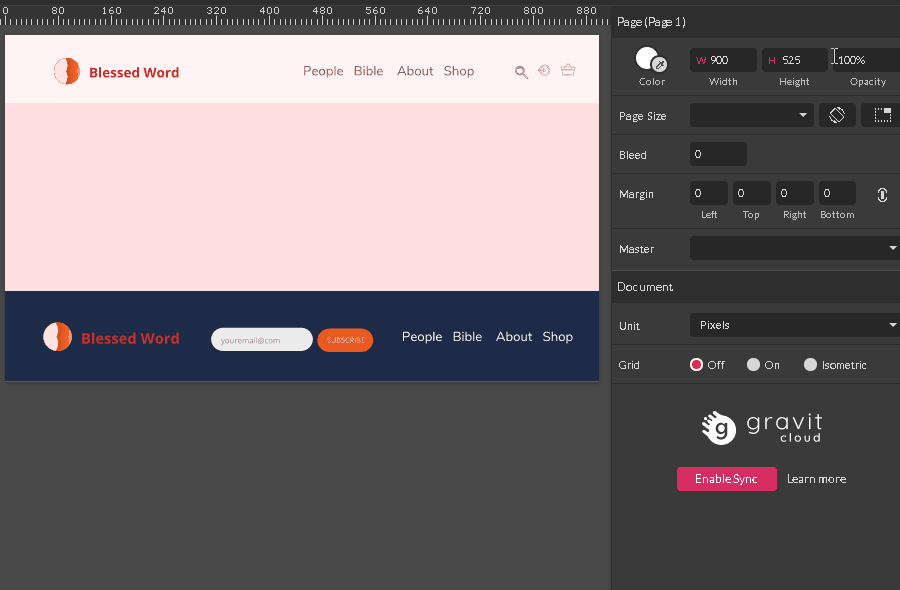